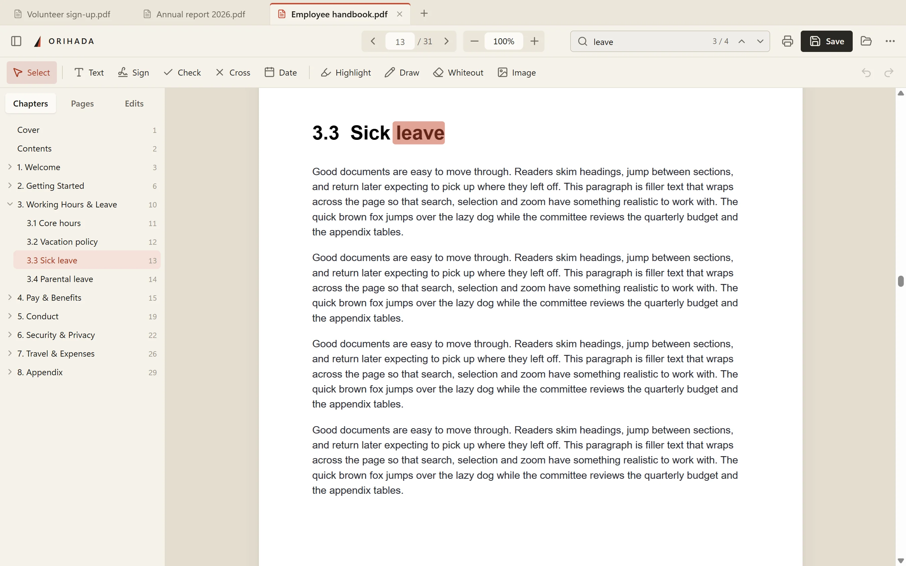
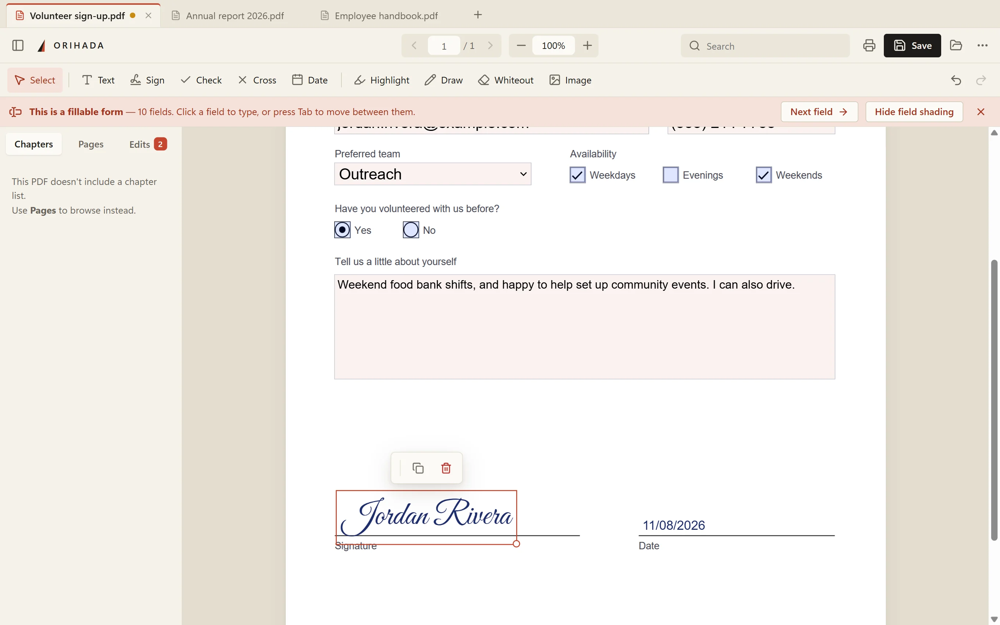
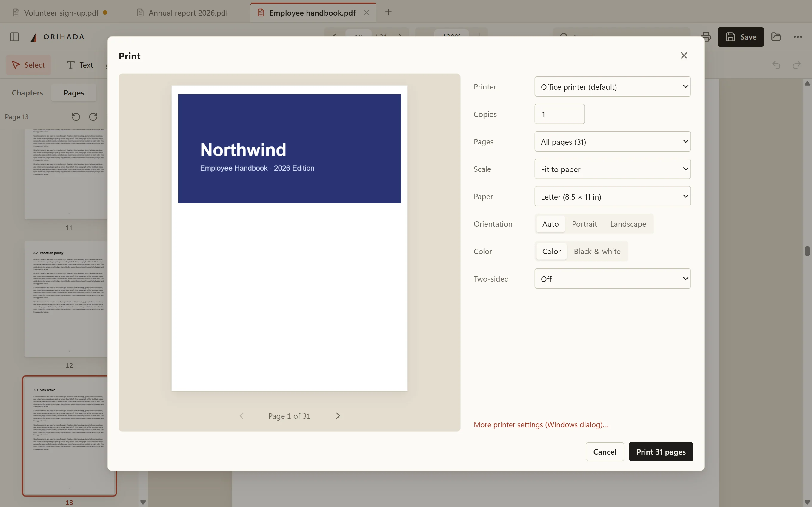
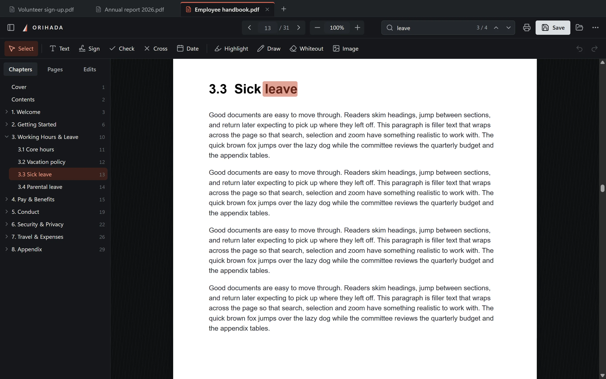

Free PDF app for Windows
PDFs, without
the clutter.
Read, fill in forms, sign, and organize pages. No account, no ads, no “upgrade to Pro” pop-ups. Your files never leave your computer.

Everything people put up with in PDF apps, left out.
Fill & sign
Forms in a minute. Signatures in two clicks.
Orihada spots fillable forms and moves you from field to field with Tab. Forms that aren’t fillable work too: click anywhere and type. Draw, type or upload your signature once, and it’s ready next time.
Try it on a sample form →
Jump by chapter
The document’s chapters appear in the sidebar, and you can go to any page by typing its number.
Many PDFs at once
Each PDF opens in a tab. Drag tabs to reorder them, or drag one out to give that PDF its own window, for example on a second screen.
Fix pages
Rotate, reorder, delete, merge in pages from another PDF, or save a few pages as a new file.
Mark up
Add text, checkmarks, highlights, drawings, images and whiteout, then move or undo any of them.
Find anything
Search the text, or press Ctrl+K and type what you want to do.
Saves that work everywhere
Saves a standard PDF that opens in any other app. There’s also a locked copy that can’t be edited.
See it before it prints.
Get a live preview of every sheet, and choose the page range, fit-to-paper or exact size, paper, orientation, color and two-sided printing. Your settings are remembered.

Paper by day. Steel by night.
A warm, paper-like light theme and a forged-steel dark theme. Each follows your Windows setting, and you can turn on dark pages for reading at night.

About the name
Ori means to fold. Hada is the grain that shows in a blade’s steel after the smith folds and hammers it again and again. Paper is folded too. We liked the idea of software made the same way: folded over many times until there is nothing extra left.
Questions
Windows says “Windows protected your PC.” Is it safe?
That warning appears for new apps that aren’t yet known to Microsoft’s SmartScreen. It doesn’t mean anything was found in the file. Click More info, then Run anyway. To check the file is exactly the one published here, compare its SHA-256 fingerprint (listed below) with the output of Get-FileHash in PowerShell.
Is it really free?
Yes. There is no trial, subscription, paid tier or ads, and no features are locked.
What happens to my files?
Nothing leaves your computer. Orihada has no account system and no analytics. The only thing it ever sends is a small daily check for new versions, which you can switch off in ⋯ → About. The browser version also runs entirely on your device.
How do I make it my default PDF app?
Right-click any PDF, choose Open with → Choose another app, pick Orihada, and click Always. You can also go to Settings → Apps → Default apps, type .pdf, and choose Orihada.
Can I use it without installing?
Yes. The no-install version is a single file you can run from anywhere, including a USB stick. Download the no-install version (about 100 MB).
Mac or Linux?
The desktop app is for Windows for now. On any computer you can use the browser version: it has the same features, and saving downloads the edited PDF.